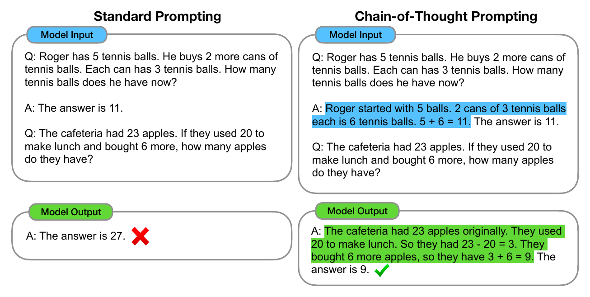
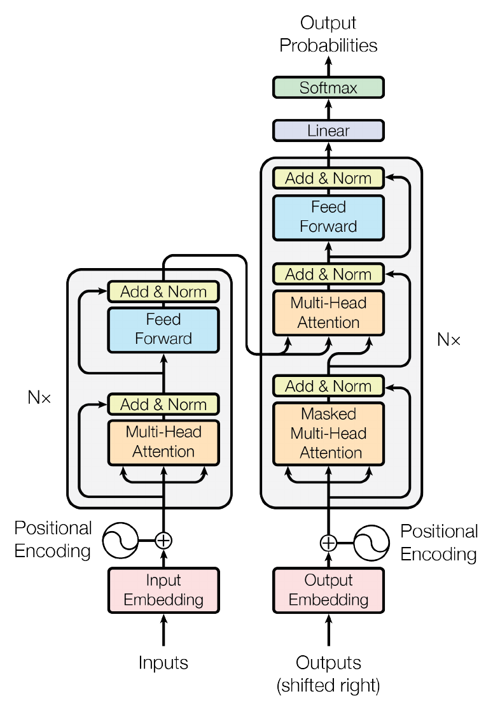
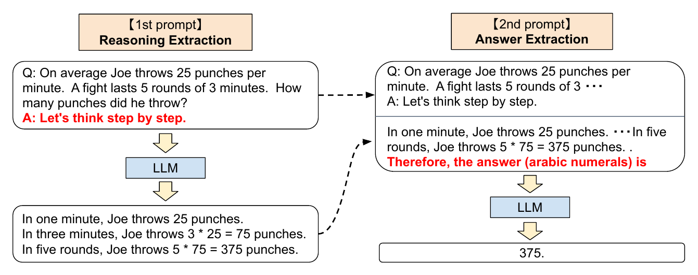
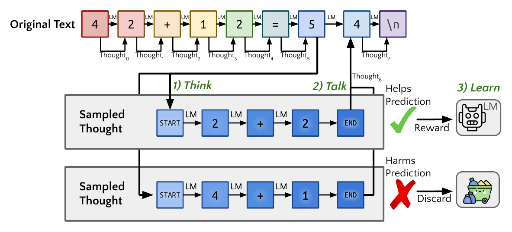
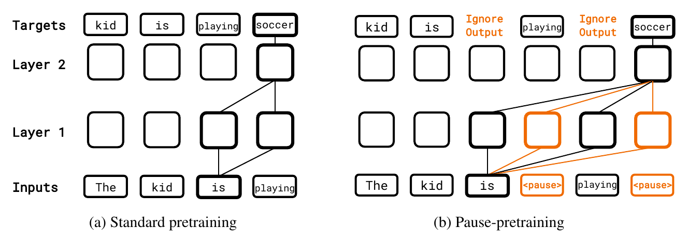
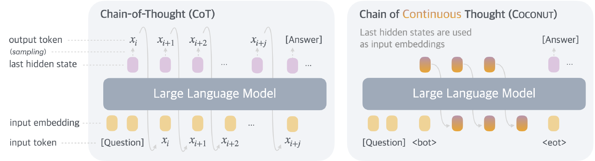

Prompted CoT
Instruction or demonstrations at inference time
Parameters stay fixedSame problem. Same model. More computation before the answer.

Internal activations still exist, but there is no dedicated sequence of pre-answer tokens.
Most task computation must fit inside the fixed-depth passes that produce the answer.
A direct response can contain several answer tokens. What it lacks is a separate scratchpad before committing to the answer.

Each generated reasoning token adds another decoding step through the Transformer layers.
Few-shot CoT: show worked reasoning examples in the prompt.
Zero-shot CoT: add a trigger such as “Let’s think step by step.”
No parameter update: this is prompt engineering at inference time.

Instruction or demonstrations at inference time
Parameters stay fixedSFT, distillation, or reinforcement learning
Parameters changePrompting elicits a behavior without updating the model.
Training changes the behavior the model produces by default.

The same kind of reasoning token can be exposed, summarized, or kept private.
User sees the reasoning and the answer.
User sees an answer or a model-generated summary.
Displayed CoT is not guaranteed to be a faithful recording of every factor that caused the answer.


ht → words → embedding → ht+1
ht → ht+1 → ht+2
Potential: richer continuous states and fewer verbose tokens.
Cost: harder to interpret, supervise, and verify.
Status: an active research direction, not a standard deployed mechanism.
Hidden describes visibility. Latent describes representation.
| Path | Pre-answer steps | Representation | Visible to user | Special training |
|---|---|---|---|---|
| Direct answer | No separate workspace | Standard hidden activations | Answer only | Not required |
| Prompted CoT | Yes | Discrete language tokens | Usually visible | No parameter update |
| Trained token reasoning | Yes | Discrete reasoning tokens | Visible, hidden, or summarized | Yes |
| Latent reasoning | Yes | Continuous hidden states | Usually hidden | Yes |
LLM reasoning developed by giving models more flexible computation between the question and the final answer, not simply by making thoughts visible or hidden.